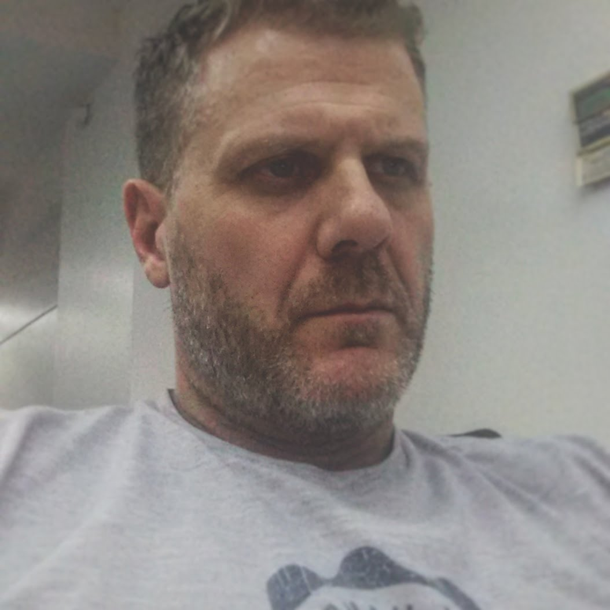

Sergio L. Grittini
sergio.grittini@gmail.com
+54911 64024422
Villa del Parque (CABA)
Divorciado 2 Hijos
50 años
Java 🏆🏆🏆🏆🏆
Oracle 🏆🏆🏆🏆🏆
html5 🏆🏆🏆🏆
js 🏆🏆🏆🏆
css 🏆🏆🏆🏆
Node.js ⭐⭐⭐
Objetivo:
Contribuir en una Organización Empresarial que se proponga de manera constante la mejor calidad de sus productos y servicios.
Con la intención aplicar mi experiencia y conocimientos en sistemas informáticos. Continuar con mi crecimiento técnico, humano, personal y profesional.
Aspiro a formar parte de equipos de trabajo que búsquen permanente imnovación, creatividad y cumplimiento de los objetivos de La Empresa.
Experiencia Laboral
Aplicaciones en Documentum para YPF
-
Desarrollo/Mantenimiento en Java del FrameWork para TRX con Documentum
Desarrollo e implementación de aplicaciones Documentum
-
Desarrollo en Java del FrameWork para TRX con Documentum
-
Mantenimiento de Aplicaciones WebTop
Jefe de proyecto de Repsol YPF, Dowstream
-
Implementación del programa YPF Serviclub con LaPos
-
Mejoras en el Sitema YPF Boxes
-
Desarrollo en Java para las interfaces con LaPos (Visa)
Jefe de proyecto del area Retail
-
Implementación de punto de ventas para cadenas minoristas
-
Colabaoración en la coordinación de desarrollo
-
Desarrollo en Clarion
-
Desarrollo e implementación de Punto de Venta y homologación de impresora Fiscal para Baby Cottons Brasil
-
Implementación de Punto de Venta para Baby Cottons Argentina
-
Desarrollo en .Net para autorización electrónica de cobros con Posnet
Responsable de Desarrollo en Gestión Documental YPF, Upstream
-
Desarrollo en Java, Web Services para Documentum
-
Desarrollo en xCP plataforma de Documentum
-
Desarrollo e implementacion del Sistema de Gestión Documental Dominio Minero xCp 2.0 Web Services Java
-
Desarrollo e implementacion del Sistema de Gestión Documental Gestión de Ductos xCp 2.0 Web Services Java, integración jSon con Sistemas propios
-
Creación, Desarrollo,Implementacion y Mantenimiento de FMK (FrameWork) Aquitectura SOA de servicios para TRX contra Documentum. Java-DFC 7.01-Jboss
Desarrollo en JAVA para Banco Rio
-
Desarrollo en Java, EJB, WS para la plataforma Backoffice
Desarrollo en JAVA para Banco Galicia
-
Desarrollo en Java, Struts, javaScript, PLSQL para HomeBanking y programa Quiero
Desarrollo Telefonica España
-
Desarrollo de procesos en JAVA y PL-SQL para proyecto de ITIL en Telefonica de España
-
Mantenimiento y soporte de los servicios de ETL
-
Desarrollo de los procesos de carga de información por archivos XML
-
Automatización y control de procesos en UNIX. (Shell Scripts, AWK)
-
Configuración, Tuning de Base de Datos y procesosPL-SQL
Placeholder content for this accordion, which is intended to
demonstrate the
.accordion-flush class. This is the third item's
accordion
body. Nothing more exciting happening here in terms of content, but just filling up
the
space to make it look, at least at first glance, a bit more representative of how
this
would look in a real-world application.Placeholder content for this accordion, which is intended to
demonstrate the
.accordion-flush class. This is the third item's
accordion
body. Nothing more exciting happening here in terms of content, but just filling up
the
space to make it look, at least at first glance, a bit more representative of how
this
would look in a real-world application.Placeholder content for this accordion, which is intended to
demonstrate the
.accordion-flush class. This is the third item's
accordion
body. Nothing more exciting happening here in terms of content, but just filling up
the
space to make it look, at least at first glance, a bit more representative of how
this
would look in a real-world application.Placeholder content for this accordion, which is intended to
demonstrate the
.accordion-flush class. This is the third item's
accordion
body. Nothing more exciting happening here in terms of content, but just filling up
the
space to make it look, at least at first glance, a bit more representative of how
this
would look in a real-world application.